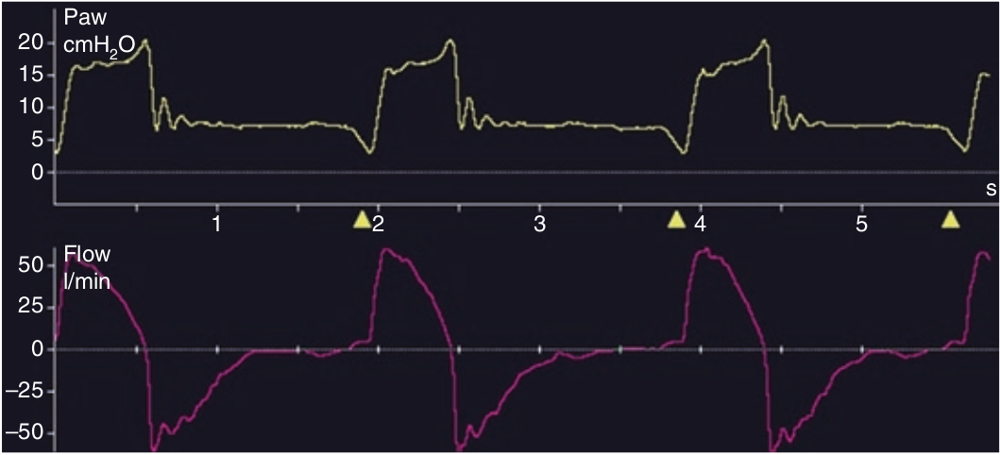

سایکل دیررس هنگامی رخ میدهد که تنفس اسیسی بعد از اتمام تلاش دمی بیمار همچنان ادامه داشته باشد. سایکل نارس بصورت تغییراتی در منحنی شدت جریان و فشار ممکن است تظاهر کند. در منحنی شدت جریان× ممکن است شیب منحنی بصوری خط پایه (صفر) انحراف پیدا کند که نشان دهنده راه شدن ناگهانی تلاش دمی بیمار (استراحت عضلات دمی) و یا انقباض عضلات بازدمی (بازدم فعال) می باشد. در منحنی فشار، مقدار فشار راه هوائی ممکن است از میران تنظیم شده (PS) بیشتر شود.

در مورد سایکل دیرس کدام مورد زیر صحیح است؟
۱ - حجم جاری را کم میکند
۲ - مدت هواگیری ریه ها را کم میکند
۳ - ممکن است سبب کاهش اتساع مفرط دینامیک شود
۴ - اساسا در یک سیستم دارای کمپلیانس کم روی میدهد
۵ - افزایش فشار در انتهای مرحله دمی روی میدهد